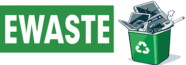

What is TechBridge
TechBridge is a platform designed to address the growing issue of electronic waste and
the digital divide. In today's fast-paced world, electronic devices become obsolete quickly, leading to a
substantial increase in electronic waste. Simultaneously, many individuals and communities lack access to these
devices due to financial constraints. TechBridge bridges this gap by providing a user-friendly website where people
can donate their unused electronic devices, helping to reduce electronic waste and make technology more accessible
to those in need. This initiative not only promotes environmental sustainability but also fosters a sense of
community and goodwill among its users by encouraging the sharing of electronics for a greater social impact.

Environmental Impact:
The rapid obsolescence of electronic devices leads to a significant accumulation of electronic waste, which often contains hazardous materials. Improper disposal can result in soil and water pollution, posing long-term environmental threats. The improper handling of electronic waste can have lasting effects on ecosystems and public health.
.jpeg)
Education and Opportunity Gap:
In communities where access to electronic devices is limited, a digital divide hinders educational and economic progress, perpetuating inequality. Bridging this gap is essential for a more equitable society. Sharing devices within the community allows those who no longer need them to empower others, ensuring access to technology becomes a shared resource for equal opportunities.
What is e-waste?
The article addresses the pressing issue of electronic waste (e-waste), highlighting its environmental and health risks. Despite its small contribution to total waste, e-waste is a major source of heavy metals in landfills. To address this concern, responsible disposal methods such as reuse, local recycling centers, and device maintenance are recommended, emphasizing the role individuals can play in mitigating e-waste's harmful effects and preserving the environment for future generations.
The article discusses the escalating problem of electronic waste (e-waste) driven by the frequent turnover of electronic devices. This rapid discard-and-upgrade cycle, despite devices becoming smaller, results in a substantial increase in e-waste. The article highlights the urgent need for responsible e-waste legislation and recycling practices, emphasizing the potential economic value of recycling and the role individuals play in reducing e-waste through conscious electronics choices and the environmental impact.